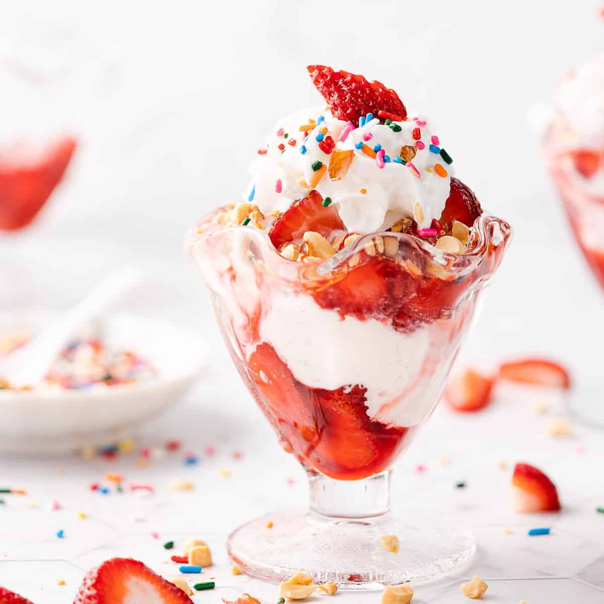

Home
Strawberry Sundae

Description:
A oh so delicious strawberry sundae you can make right in your kitchen!
A sweet and tarty strawberry sauce paired with vanilla ice cream and
garnished with even more fresh strawberries and your favorite toppings!
Ingredients:
- Ice Cream
- Salt
- Strawberries
- Sprinkles
- Sugar
- Lemon
- Whipped Cream
- Corn Starch
Steps:
-
The first step is to prep the strawberries. Wash and dry them,
then cut off the green tops. Slice them into roughly ½ inch slices.
Place 1 pound of the strawberries in a medium saucepan.
-
Along with the berries, add the granulated sugar, lemon juice,
pinch of salt and ¼ cup water.
-
Simmer the strawberry mixture, stirring occasionally, until the
strawberries have released some liquid and are softened.
-
Then, mix together the cornstarch and remaining 1 tablespoon water
together until the cornstarch is completely dissolved in the water
with no lumps. Add this cornstarch slurry to the berry mixture and
continue to cook for 1 - 2 minutes.
-
After simmering for 1 - 2 minutes, stirring occasionally, the liquid
in the sauce should be glossy and slightly thickened. It won't be super
thick, more like the consistency of syrup. Let the sauce cool for a
minimum of 10 minutes, it will continue to thicken as it cools.
-
When you are ready to enjoy your strawberry sundae, start by adding a
scoop of the strawberry ice cream topping into the bottom of a sundae
glass (or small bowl, whatever you have on hand). Add a scoop of
ice cream, and top off with even more strawberry sauce. And ta dah!